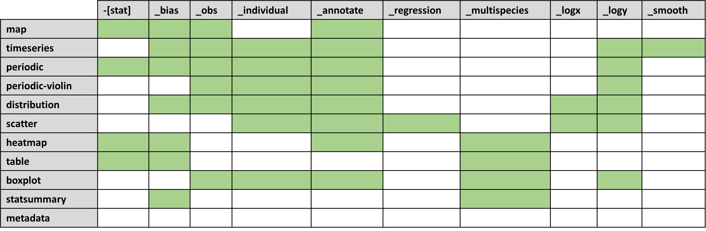

Offline reports¶
Providentia’s offline version was designed to obtain complete reports and carry out in-depth analysis of BSC experiment output, with respect to GHOST processed observational data.
Plot types and options¶
The offline report has access to a larger variety of plot types than the standard interactive version of Providentia. Each available plot type is listed here:
map
-[stat]_bias_obs_annotatetimeseries
_bias_obs_individual_annotate_logy_smoothperiodic
-[stat]_bias_obs_individual_annotate_logyperiodic-violin
_obs_individual_annotate_logydistribution
_bias_obs_individual_annotate_logx_logyscatter
_individual_annotate_regression_logx_logyheatmap
-[stat]_bias_annotate_multispeciestable
-[stat]_bias_multispeciesboxplot
_obs_individual_annotate_multispecies_logystatsummary
_bias_multispeciesmetadata
The meaning of each of these additional words (_obs, _individual, _annotate, etc.) can be found in Plot types.
Plot selection¶
You should edit the file providentia/conf/plots_per_report_type.json and add a new dictionary key with the names of the plots you want to have. For instance, if you want to include timeseries and scatter plots with and without annotations in your report, you should add:
"new_plots": ["timeseries", "timeseries``_annotate``",
"scatter", "scatter``_annotate``"
]
The plots will appear in the report in the given order. The key name new_plots can be changed and should be applied by defining the report_type parameter in the configuration file:
report_type = new_plots